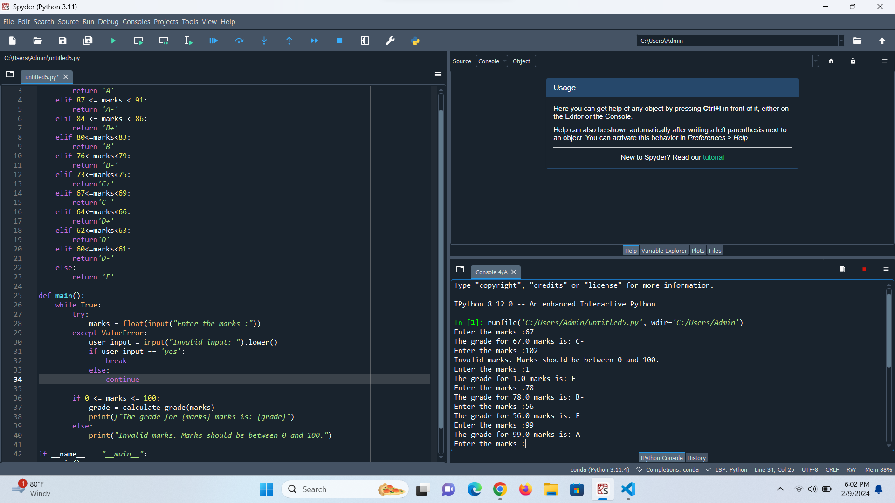

Description: This project is a grade calculator program that takes marks as input and awards the appropriate grade based on USIU's grading system. The program utilizes all necessary control statements, including loops, to continue taking marks input from the user and display the appropriate grades. It terminates only upon the user's command, allowing for multiple iterations of mark inputs and grade calculations. The program provides a simple and efficient way to calculate grades according to the specified grading system.
Application in Life: The grade calculator program can be used by students, teachers, or educational institutions to calculate grades for assessments, assignments, or exams. It simplifies the process of grading and ensures consistency in applying grading criteria. Additionally, the program can be modified or extended to accommodate different grading systems or criteria, making it adaptable to various educational contexts.
